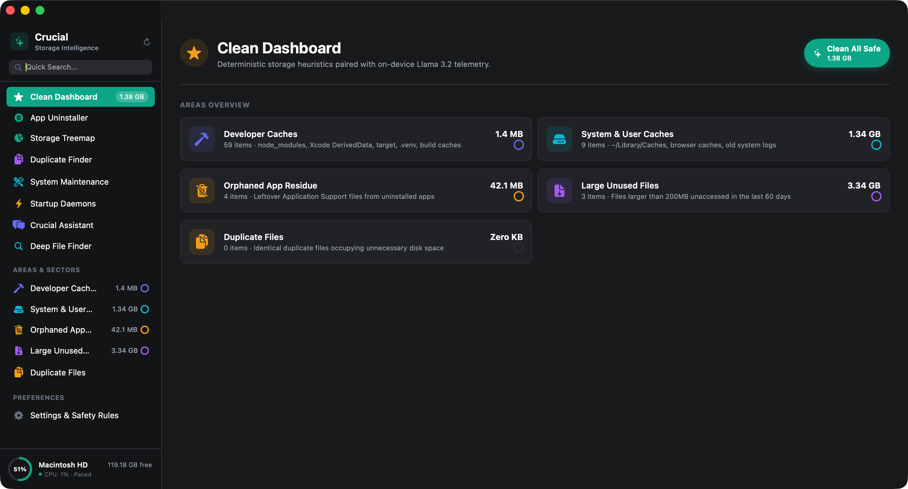

Inspect and reclaim macOS storage without silent deletions.
Crucial is a native SwiftUI utility for Apple Silicon Macs that audits developer caches, orphaned Library residue, duplicate files, and launch agents before moving reviewed items safely to Trash.
Architecture
Built around verifiable filesystem boundaries.
Every scan skips symlinks before sizing directories, computes full SHA-256 hashes before flagging duplicates, and isolates protected macOS system paths.
Developer Artifact Recognition
Targets heavy build directories including Xcode DerivedData, node_modules, Rust target folders, .build directories, and Python .venv environments while checking running processes via NSRunningApplication.
3-Stage Exact Duplicate Pipeline
Avoids false positives by filtering candidates first by exact byte size, second by 4 KB header and tail hashing, and third by full CryptoKit SHA-256 digest comparison.
Offline Forensic Guidance
Evaluates rebuildability locally using the deterministic VitalityEngine ruleset, with optional local Llama 3.2 1B Q4 inference via bundled llama-cli and zero external API keys.
Workspaces
Nine native modules inside one NavigationSplitView shell.
Inspect every screen below using real screenshots captured directly from Crucial running on macOS.

Clean Dashboard
Safety Model
Designed for developers who cannot afford corrupted toolchains.
Every destructive path requires explicit user review inside standard macOS confirmation dialogs.
| Invariant | Crucial Behavior | Standard Batch Cleaner Risk |
|---|---|---|
| Removal Destination | macOS Trash via FileManager.trashItem | Permanent rm -rf / unlink bypass |
| Symlink Handling | Skips symlinks during sizing; resolves targets prior to Trash | Follows links into system or external mounts |
| Duplicate Matching | Size + Header/Tail + Full SHA-256 verification | Filename or partial hash collisions |
| System Integrity | Read-only lock on /System, /usr, .git, and Apple system apps | Opaque privilege prompts for batch deletions |
| Network Posture | Zero telemetry, zero cloud uploads, offline inference | Analytics beacons and license phone-home calls |
FAQ
Technical details and system requirements.
Why does Crucial request Full Disk Access instead of automating everything silently?
Are deleted build caches immediately gone forever?
Does Crucial require downloading the 1B LLM model to inspect files?
Which Macs and macOS releases are supported?
Inspect Crucial from source or install the signed arm64 DMG.
Open-source MIT license, zero subscriptions, built purely with Swift and SwiftUI.